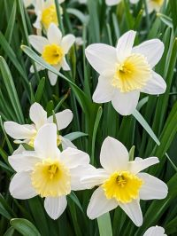
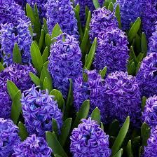
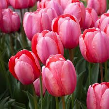
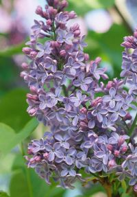
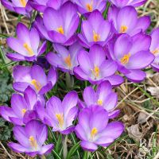
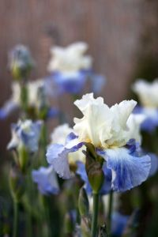

Daffodil
Daffodils are one of the first flowers to bloom in spring.

Hyacinth
Hyacinths are fragrant flowers that bloom in dense clusters.

Tulip
Tulips are known for their elegant, colorful blooms.

Lilac
Lilacs are beloved for their strong fragrance and beautiful purple, pink, or white blossoms.

Crocus
Crocuses are some of the first flowers to emerge in spring.

Irises
Irises are known for their intricate, frilled petals and come in a variety of colors, including blue, purple, and white.